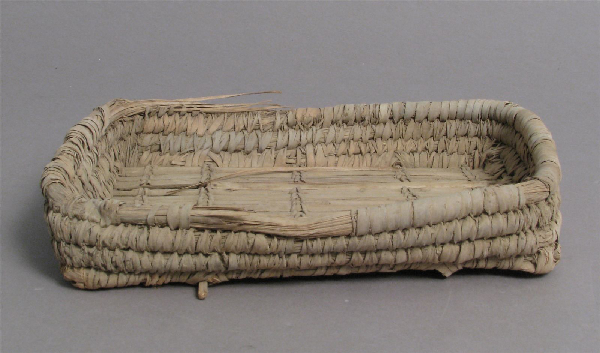
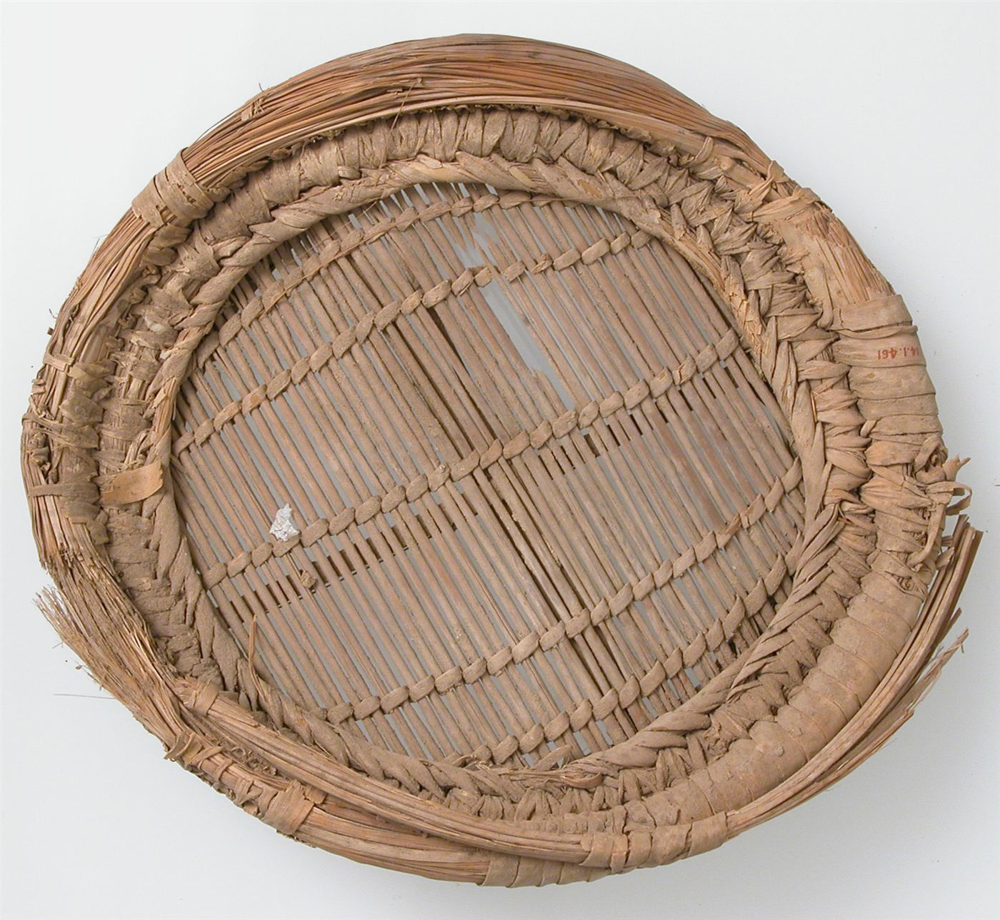
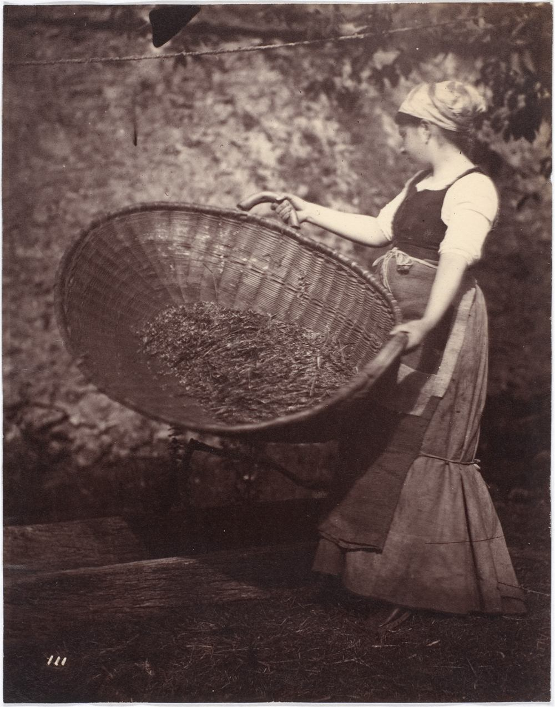
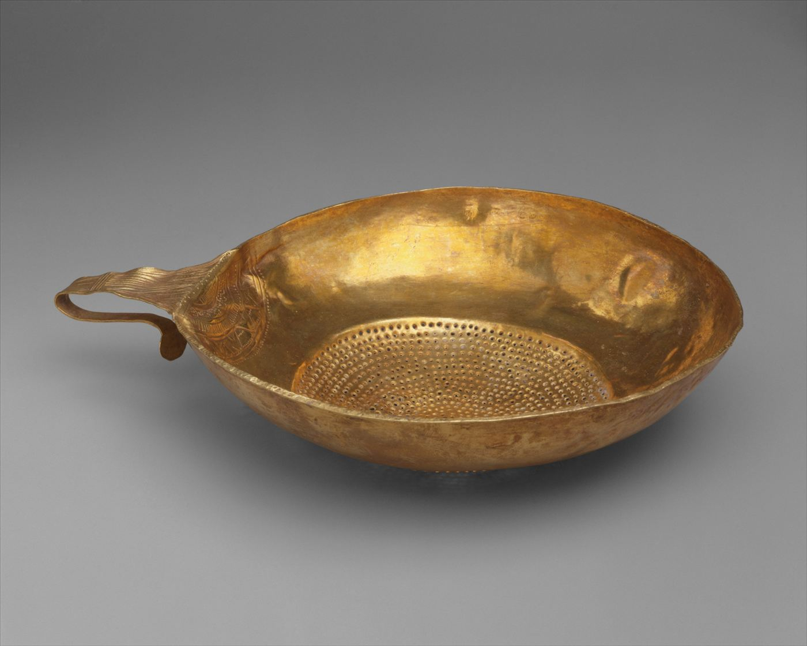

Any page, a clean table.
Also found: a repeated list of 12 product cards. Try another table
| Product | Category | price_usd | SKU |
|---|---|---|---|
| Aero Desk Lamp | Lighting | 39.00 | FW-1001 |
| Birch Monitor Riser | Desk | 54.50 | FW-1002 |
| Cedar Cable Tray | Organization | 18.90 | FW-1003 |
SKU is switched off and will not be exported.
Saved to your downloads. Nothing left your browser.
Paste a link, or scrape the page you are logged in to. Sieve finds the rows, you shape the columns, and the file never leaves your browser.
What Sieve does for you
It finds the table by itself
12 rows by 6 columns on the demo shop. Every table and repeated list is scored, and the biggest wins.
It follows the Next button
36 rows over 3 pages from one click, with your own delay between pages.
It reads pages behind your login
The extension reads the tab you are looking at, as you see it. Nothing is uploaded to read it.
It scrolls endless feeds for you
Stop it whenever you like and keep what has loaded, or cancel. Esc stops too.
It leaves as CSV, Excel or Sheets
CSV with a BOM so Excel reads accents, real XLSX, and a one-click copy that pastes straight into Google Sheets.
Link to file
Fetching the page…
First it lands as a link.
- category
- Lighting
- price
- $39.00
- rating
- 4.6
- stock
- In stock
Then Sieve finds the rows.
- category
- Lighting
- price_usd
- 39.00
- rating
- 4.6
- stock
- In stock
Then you shape the columns.
- file
- scraped-data.csv
- row
- 1 of 12
- columns
- 5
Then it leaves as a file.
One row's journey
Found
Edited
Exported
Scrape pages behind your login
A website cannot see the pages you are logged in to. The Sieve extension can, because it runs in your own browser. It reads the tab in front of you, shows a preview, and one click sends the full table here. It scrolls infinite feeds and you can stop it at any moment.
- Unzip the download.
- Open
chrome://extensionsand switch on Developer mode. - Choose Load unpacked and pick the
sieve-extensionfolder. - Open any page, click the Sieve icon, press Scrape this page.

Tested on real sites
Results from live pages, found automatically.

Why it is called Sieve
A sieve keeps what you want and lets the rest fall through. We do that with web pages.

